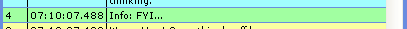
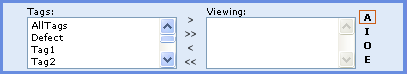
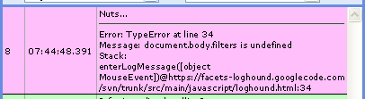

Features
Log Messages
Log Hound is a JavaScript logger. This is to say that you can have lines like this in your code:
window.logHound.logInfo('Info: FYI...');
...and you get a log message in the Log Hound interface like this:

Out of the box, Log Hound supports your six basic logging levels: Fatal, Error, Warn, Info, Debug, and Trace.
Create Your Own Message Filters
Let's start with looking at an existing filter.
01 function LogHoundTextSearchFilter(searchText) {
02 LogHoundTextSearchFilter.baseConstructor.call(this, 'lhTxtSearchFilter');
03 this.searchText = searchText;
04 this.regex = new RegExp(searchText, 'i');
05 }
06 FctsTools.extend(LogHoundTextSearchFilter, LogHoundMessageFilter);
07 LogHoundTextSearchFilter.prototype.showMessage = function(msgRec) {
08 if(this.searchText=='') {
09 return true;
10 }
11 return msgRec['text'].search(this.regex)>=0;
12 };
13 window.logHound.addMsgFilter(new LogHoundTextSearchFilter('textToMatch'));
The above is the filter used when searching the message text for matches. As the example shows, there are three things you need to do in order to create a filter:
- Lines 1-5: Create your filter class
The first line (02) in the class(function...constructor... javascript objects are confusing!) declaration sets the constructor up for the super class you are extending. Leave the "this" argument as-is. The second string argument needs to be a unique ID for your filter. If you add the filter a second time to Log Hound, this ID is what Log Hound will use to identify and remove the existing instance of your filter.
The rest of the filter class can do whatever you need it to do. Pass whatever you need to the class constructor and set up your member variables - it's your show here.
- Line 6: Extend LogHoundMessageFilter with your class
This is VERY IMPORTANT!!!! Not only do you have to do this, but you have to extend LogHoundMessageFilter *_before_* you declare the showMessage() function of your object. Why? It's a JavaScript inheritance thing. Just trust me.
The first argument to the extend function is your class, the second needs to be the LogHoundMessageFilter class.
- Line 7: Add
showMessage(msgRec) function to your class
The "msgRec" variable will be a message record object with the following properties:
- msgRec.element {DOMElement}: The DIV wrapper around the log message in the user interface. Be VERY careful with what you do to this element!
- msgRec.error {Error}: A JavaScript error object if one was provided with the log message, or
null.
- msgRec.level {LogHoundLevel}: The log message level.
- msgRec.number {Number}: The log message number.
- msgRec.tags {String[ ]}: A string array of tags associated with the log message.
- msgRec.text {String}: The string text of the message.
- msgRec.timestamp {Date}: A JavaScript date object representing the timestamp of when the message was received by Log Hound.
- Lines 8-11: Return
true or false
You can use any of the information in the message record or from your filter implementation to determine if the log message should be visible. Returning true will make the message visible, and returning false will hide it. Keep in mind that filters are cumulative, so all it takes to hide a message is for one filter to return false.
- Line 13: Add the filter to Log Hound
Don't forget to add the filter to Log Hound! If you add the same filter twice, the first copy will be overwritten by the new copy.
Define Your Own Log Levels (experimental)
You can easily define your own log levels to Log Hound. As an example, here's how to define a log level called "page":
function PageLogHoundLevel() {
TraceLogHoundLevel.baseConstructor.call(this, 40, 'page', true);
}
var LogHoundLevelPreload = new Array();
LogHoundLevelPreload[0] = PageLogHoundLevel;
The important parts are to give your log level function a unique name and to be sure to include the base constructor line. For the base constructor line:
- 'this' = don't change this.
- '40' = this is the integer level weight of the log message and should reflect the position the message would represent. Trace is 50 and Fatal is 100, the intervening levels occupying the multiples of ten. If your message is more detailed than Trace (really???), then set it at a lower number than 50. You get the idea.
- 'page' = the string name of the level. Alpha characters only. Must be unique.
- 'true' = Whether or not the level is enabled. This is used internally, but can be used to initially disable a logging level until it is turned on in the interface. Keep this as "true" unless you know what you are doing.
The array declaration must be done by you and must occur before the javascript include for Log Hound. This ensures that you can create a list of log levels that will be loaded when Log Hound is initialized. If you create the array with the name "LogHoundLevelPreload", Log Hound will check for it and that it contains an array when the JavaScript include is executed. Log Hound will then attempt to load all items in the array as log level functions.
Control Bar
From left to right:
- "v" = Show more log messages.
- "^" = Show less log messages.
- Select box = Set new log level. Messages will only be logged for level selected and those levels above it in the list. This allows you to dynamically change the log level during execution of your scripts.
- Coloured squares = Show level message toggles. Each of these coloured boxes represents a log message level. Click on a box to hide the messages of that level in the display. Click again to show them.
- "D" = Detail mode. This toggles the log message lines in the display to show more information about the messages.
- Search text box = As you type in this text field, Log Hound will match the entered text to text in any of the messages and hide those messages that don't match. Clear the field to show all messages again.
Message Tags
Logged messages can be tagged. Tags allow you to manipulate and search through the log messages in new and unique ways. Tags are applied by adding an array argument to the log method call:
window.logHound.logInfo('Info: FYI...',['Tag3','AllTags']);
In this case the tags for the message are "Tag3" and "!AllTags". Other tags you could add to a message are:
# the name of the function the message is logged in
# the name of the script the message is from
Tags can be utilized by the Log Hound interface with the tag controls:

- "A" = Any: Messages sporting any of the tags listed in the "Viewing" column will be display, and all others will be hidden.
- "I" = Intersection: Only messages with all the tags listed in the "Viewing" column will be displayed.
- "O" = Only: Only messages with all the tags listed in the "Viewing" column _and no other tags_ will be displayed.
- "E" = Exclusion: Only messages that have _none_ of the tags in the "Viewing" column will be visible.
Log Errors
Log Hound will pretty-print error information if you pass in an error object.
try {
document.body.filters[0].apply();
} catch(err) {
window.logHound.logInfo('Nuts...',['tag8','methodName'],err);
}
